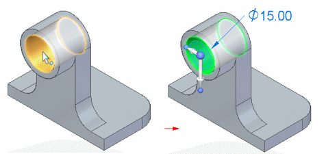
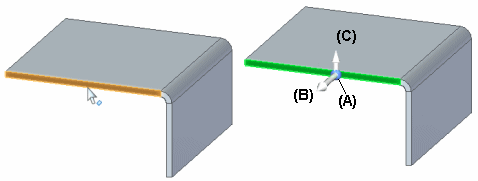
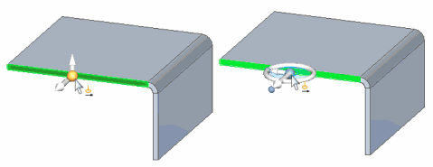

2D steering wheel overview
The 2D steering wheel is a graphic tool or handle that you can use to manipulate model geometry you have selected.

You can use the 2D steering wheel to move or rotate the following types of elements:
-
Cylindrical faces
-
Holes
-
Patterns
-
Sheet metal thickness faces
-
Manufactured features, such as dimples and drawn cutouts
For example, when you click a hole feature, the 2D steering wheel handle (A) displays, along with the edit definition handle (B).

Progressive exposure
The 2D steering wheel handle display can vary based on the elements in the select set. This display variation is called progressive exposure. This means that in many modeling scenarios, only some of the 2D steering wheel components are displayed when you select an element.
For example, when you click a planar thickness face on a sheet metal part, only the origin knob (A) and primary axis (B) on the 2D steering wheel display. Additionally, the flange start handle (C) displays.

Clicking the origin knob displays all of the steering wheel components and attaches the cursor to the origin so you can move the steering wheel freely.

2D steering wheel handle components and function basics
You use the various components on the 2D steering wheel to specify how you want to modify the elements in the select set. The following illustration and table lists the name and primary function for each component of the 2D steering wheel using the left mouse button.

|
Component Name |
Primary Function |
|
(A) Origin knob |
Reposition 2D steering wheel to new location |
|
(B) Primary Axis |
Starts Move operation along primary axis |
|
(C) Primary bearing knob |
Rotate primary axis |
|
(D) Secondary axis |
Starts Move operation along secondary axis |
|
(E) Secondary bearing knob |
Reorient secondary axis |
|
(F) Torus |
Starts Rotate operation about origin |
|
(G) Tool plane |
Starts Move operation within tool plane |